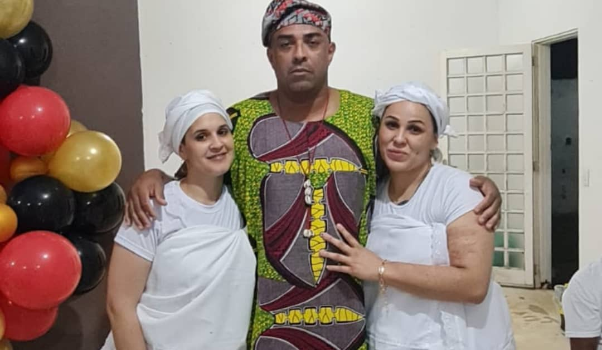
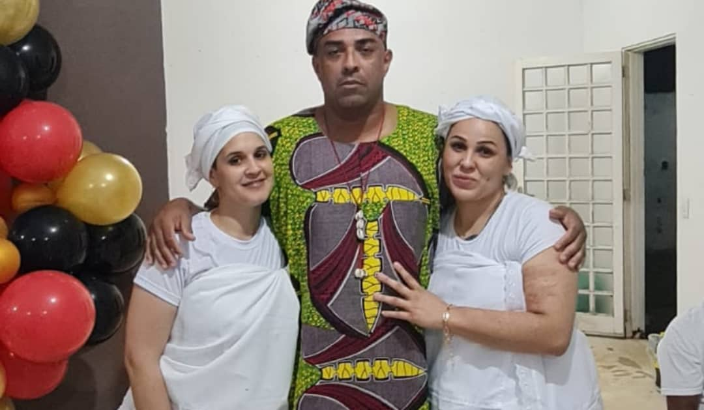

Quem é Baba Ifá Niy Esusegun
Baba Ifá é sacerdote de Ifá, iniciado nos mistérios de Orunmilá, com missão de espalhar o conhecimento ancestral e guiar os filhos e filhas de fé no caminho do axé.

Sabedoria ancestral, conexão espiritual, axé!
Baba Ifá é sacerdote de Ifá, iniciado nos mistérios de Orunmilá, com missão de espalhar o conhecimento ancestral e guiar os filhos e filhas de fé no caminho do axé.


 

WhatsApp: (11) 98394-3767
Email: dofonogilberto53@gmail.com
Siga no Instagram: @babalorisagiba
Facebook: @BabaIfaNiyEsusegun
Atendimento com respeito, privacidade e compromisso com a espiritualidade afro-brasileira.